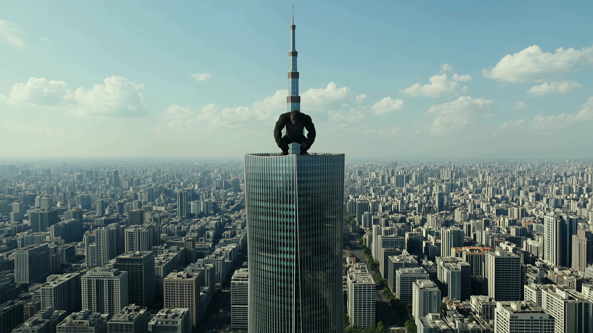
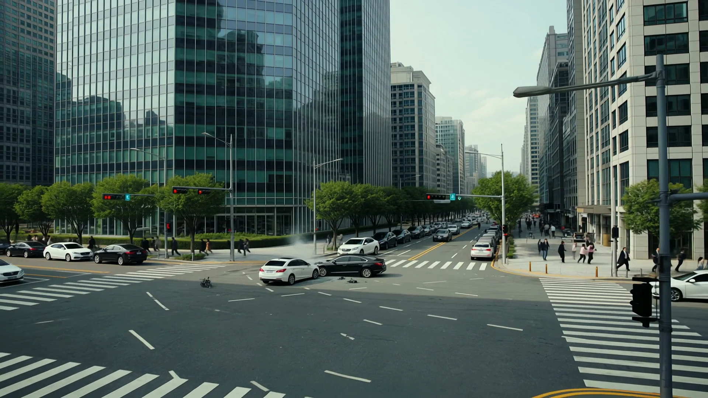

01
도시 위의 위협
롯데타워에 꼭대기에 킹콩이 올라가있다.
먼저 장소와 주체를 정한다.
킹콩의 포효와 가슴을 치는 행동이 이어질 충돌을 예고한다.
생성된 장면에서영상에서는 고층 건물과 킹콩의 관계가 형성된다.
건물 실루엣은 실제 롯데타워와 차이가 있다.

DRONE MATCHUP CLASS 2026.11.01
이 영상의 연출노트THE FILM / 00:41
강의 현장에서 만든 영상에 색과 소리와 타이틀을 더했습니다.
서울 상공 1920 × 1080 / 24 fps
재생 버튼을 누르면 영상을 불러옵니다.
01 / THE DIRECTOR
학교 드론 매치업 강의에서 생성형 AI로 동영상을 만드는 방법을 설명했습니다.
그리고 그 자리에서 Kling으로 만들고 시연했습니다.
먼저 머릿속에 장면을 그립니다.
그 장면을 문장으로 옮깁니다.
문장을 읽으면 어떤 결과가 나올지 머릿속에 다시 그려져야 합니다.
그래야 결과가 내 의도에 맞게 나왔는지 판단할 수 있습니다.
02 / CAUSE & CONSEQUENCE
공격에서 반격으로.
추락에서 도시의 혼란으로.
01
롯데타워에 꼭대기에 킹콩이 올라가있다.
먼저 장소와 주체를 정한다.
킹콩의 포효와 가슴을 치는 행동이 이어질 충돌을 예고한다.
생성된 장면에서영상에서는 고층 건물과 킹콩의 관계가 형성된다.
건물 실루엣은 실제 롯데타워와 차이가 있다.
02
한국 드론 부대가 킹콩을 에워싸고 공격한다
드론이 공격하기 때문에 킹콩이 팔을 휘두른다.
두 행동을 이어서 쓰면 앞 장면이 뒤 장면의 이유가 된다.
생성된 장면에서포위와 공격에 이어 킹콩의 반격이 나온다.
드론의 세부 형태와 비행 경로는 AI가 채운다.
03
킹콩이 박살낸 드론이 도로로 떨어진다.
공중에서 끝내지 않는다.
파괴된 드론이 지상으로 떨어지며 다음 장면의 원인이 된다.
생성된 장면에서공중 충돌과 파편의 추락이 연결된다.
어느 드론이 맞아 떨어졌는지의 연속성은 더 다듬을 수 있다.
04
롯데타워 아래에는 떨어지는 드론때문에 자동차들이 충돌하고 사람들이 대피한다.
시선이 거리로 내려온다.
추락이 자동차 충돌과 사람들의 대피로 이어지며 하나의 인과 흐름을 닫는다.
생성된 장면에서도로의 혼란과 대피가 보인다.
특정 잔해가 특정 차량 충돌을 일으키는 순간은 더 명료하게 수정할 수 있다.
03 / THE ORIGINAL PROMPT
강의에서 사용한 프롬프트 원문입니다.
행동의 순서와 그 결과를 문장으로 연결했습니다.
롯데타워에 꼭대기에 킹콩이 올라가있다.
킹콩이 울부짓는다.
킹콩이 양팔로 가슴을 친다
한국 드론 부대가 킹콩을 에워싸고 공격한다
킹콩은 드론을 잡으려고 팔을 휘두른다
드론의 일부는 킹콩의 팔에 걸려서 떨어지고,
일부 드론은 킹콩을 공격한다.킹콩이 박살낸 드론이 도로로 떨어진다.
롯데타워 아래에는 떨어지는 드론때문에 자동차들이 충돌하고 사람들이 대피한다.
04 / JUDGE & REVISE
모든 디테일을 먼저 쓸 필요는 없습니다.
전체적인 인과관계는 내가 설계합니다.
구도와 움직임의 디테일은 AI가 생성합니다.
결과를 보고 바꿀 부분을 결정합니다.
건물의 형태를 롯데타워로 더 분명하게.
팔에 맞은 드론과 추락하는 드론을 더 연속적으로.
낙하한 잔해와 차량 충돌의 관계를 더 명료하게.
생성 결과를 보고 내린 편집 판단입니다.
이번 색보정과 타이틀 편집으로 원본의 건물이나 행동 자체를 바꾸지는 않았습니다.
